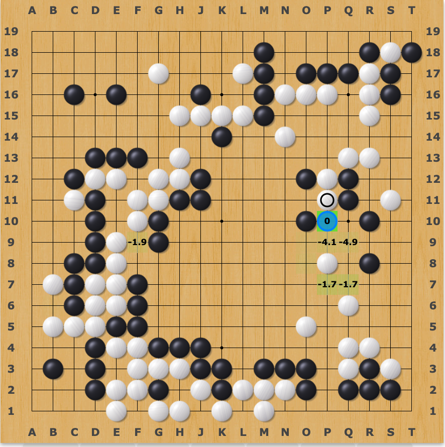

LLMs are an impressive dead end
Computers are not smart. In fact, they are extraordinarily dumb, only able to
process
the simplest of logic and manipulate data in basic ways.
Nor are computers logical. They may be able to evaluate simple boolean logic
and follow preset algorithms faithfully and deterministically, but it would
be misleading to imply that they possess any logic or reasoning capabilities
of their own.
However, they are fast. It turns out that being able to do dumb things
very fast can produce some startlingly powerful results.
In 1996 IBM unveiled Deep Blue against reigning chess world champion Garry
Kasparov. Deep Blue boasts an impressive set of statistics: 11 years of
development, able to evaluate 200 million positions per second, and cost
around $10 million dollars to create.
Deep Blue pushed classical computing algorithms to the limit, using
specialised hardware, fine-tuned heuristics and rules for every part of the
game, and large endgame databases.
It was able to beat Garry Kasparov in 1997, but you’d be hard-pressed to
find a computer scientist or chess professional who would consider it to be
intelligent, or truly capable of logic and reasoning.
The holy grail of Intuition
The development of Deep Blue involved a lot of hardcoded rules from chess professionals. In essence, humans condensed their
intuition into heuristics that could be used to optimise the dumb,
brute-force tree search of chess positions.
A decade ago, it was almost unthinkable that a piece of software could
possess any kind of intuition of its own. After all, intuition is a vague,
hand-wavy, and distinctly human concept compared to the cold hard “logic” of
algorithms of that time.

While computers could calculate the multiplication of two 10-digit numbers
in an eye-blink, simple human tasks like recognising words in an image or
writing naturally were far out of reach. Any task that a human could do
intuitively was a virtual impossibility for computers.
Artificial neural networks
Fast-forward to the 2010s and artificial neural networks were becoming
increasingly powerful. The search for the holy grail of AI had set it sights
on developing human-like intuition using artificial machine learning models.
AlexNet, a Convolutional Neural Network developed in 2012, marked a turning
point in machine image recognition.
Generative Adversarial Networks (GANs) in 2014 enabled the generation of
realistic images, videos, and music.
And of course, Large Language Models (LLMs) such as GPT-3 in 2020 set the
world aflame with its ability to produce realistic, human-like text.
Intuition is “solved”
If Deep Blue was pure brute-force logic, then modern deep neural networks are
unadulterated and distilled intuition.
LLMs have condensed mind-bogglingly vast amounts of data into a model that
can intuitively spit out text that makes a lot of sense.
Imagine trying to intuitively answer complex questions like 3,618,392
divided by 25,832. No, don’t even try to do any approximate mathematical
calculations - just intuit it.
Did you get close? I didn’t - I panicked and came up with 200. I put it
through Hermes llama2 13B and it gave me 140.74, which is incredibly close
to the true answer of 140.07.
Modern LLMs are genuinely impressive. If Deep Blue pushed the boundaries of
classical computing algorithms and hard-coded logic, then LLMs have surely
punched far above their weight in terms of achieving results through pure
intuition.
Intuition alone is not enough
So many impressive feats have been achieved by this intuition alone - surely
if we just created even more powerful intuition, all the problems with
LLMs could be solved?
To intuit something, you must understand the subject matter in a deep,
subconscious way.
In order to simply know the answer to increasingly complex and general
problems, we would need to create a being that is virtually omnipotent.
Since LLMs are trained on human data, we would essentially need to create
God in man’s image.
Not only does that sound blasphemous (no, I’m not religious), it’s likely an
impossibility.
Without literal God-level intuition, it can never be a
replacement for slowly reasoning through complex problems with logic.
Intuition can only ever be an optimisation to guide where we apply our logic.
Case study: AlphaGo
While Deep Blue made an impressive mark on the world of chess, the game of
Go has far more possible positions. Even years after chess engines could
reliably beat the strongest human players, Go seemed to be untouchable due
to how resistant it was to brute-force algorithms.
Everything changed with AlphaGo, a system that combined superhuman
intuition from deep neural nets with superhuman logic from its
deep calculations with its Monte Carlo Tree Search (MCTS).
A quick primer on MCTS - instead of brute-forcing every possible sequence of
moves (impossible), MCTS involves playing a single sequence of moves out
to the end of the game by picking random valid moves at each point, then recording
the result. Do this a few thousand times, and you start to build a
probability distribution of “how many times did I win after I played this
particular move?”.
You can think of it as a probabilistic, sampled DFS, compared to the
traditional brute-force of a 12-move-deep BFS followed by a heuristical evaluation
of the board.
Of course, playing truly random moves doesn’t give you a very good set of
samples or a very good probability distribution, since you’re sampling such
a small portion of the full state space.
Here’s how AlphaGo works:
- Given any board state, intuit the likely best moves on the board.
- Start a MCTS, where the random move selection is more heavily weighted
towards the better moves. - Use the results of the MCTS to improve your intuition of which moves
might be best.
The deep neural network (intuition) guides the MCTS (logic), and the MCTS
improves the deep neural network (learning).
It’s remarkably elegant from a high level perspective, and remarkably human.
We play the game in a similar way - we prioritise calculating lines of play
that involve likely moves based on our intuition.

An AI model highlights the moves (black to play) that it believes are best.
The number represents the change in winning probability after playing the move.
One very interesting tidbit about AlphaGo is that it actually encodes the
board state as an image for its deep neural network.
AlphaGo beats Lee Sedol, a top Go player, in a decisive 4-1 victory in 2016.
Lee Sedol retires a few years later, citing that “AI is an entity that
cannot be defeated”.
The key reason why AlphaGo was so successful was that it was able to
accurately apply logic to validate its intuition. This, in turn, is entirely
due to being able to perfectly model the rules of Go in software.
Let me repeat that: in the narrow domain of Go, we are able to perfectly
model the rules of Go for an algorithm to logically reason about.
The data problem
Intuition is build from experience. For a machine, that means data.
It’s no secret that we’ve already run out of data for LLMs to crunch on and
learn from. The entirety of the internet, decades of published books,
copyright be damned, have been sucked up and compressed into increasingly
powerful models of intuition.
Even so, they are far from perfect. LLMs constantly hallucinate and approximate.
Where can we possibly get more data from?
AlphaGo was trained from vast databases of professional human games. After
it defeated Lee Sedol, a new version called AlphaZero was developed.
AlphaZero didn’t use any human data at all. It started with zero intuition
and just played random moves against itself for hundreds of thousands of games.
Eventually, it built up enough intuition to actually surpass the original
AlphaGo. Unbounded by human biases and mistakes, it found new moves that
humans had rarely considered before.
Can we use synthetic data generated by LLMs to further train LLMs?
In short: no. Where AlphaZero generated new data from ground truths
by simply playing by the rules of Go, synthetic data amplifies biases in
existing data without bringing in anything new.
So even if it were possible to build truly god-like intuition and skip the
need for logic at all, it’s simply not practically feasible, and we’re
already pushing the limits.
Reasoning models
What about recent developments in so-called “reasoning models”? These models
are able to generate Chains of Thought that seem to approximate reasoning as
a supplement to their intuition.
Unfortunately, that’s all they are - an approximation of reasoning. While
they try and break down a task into smaller logical steps, each step is
still being evaluated with intuition rather than logic.
We may see greater fidelity and a better ability to stay on track through a
complex problem, but the fundamental building blocks are still intuition
without a drop of true reasoning.
Until we can perfectly model the real world for a machine to explore and
learn from, LLMs and “reasoning” are as different as oil and water.
World models
There have been recent news articles about various startups / research labs
that are trying to encode world models into their AI models.
Just like how AlphaGo had an accurate understanding of the rules of Go, an AI
model with an accurate understanding of the “rules” of the world should be
able to truly “reason” about things, rather than rely purely on intuition.
It actually sounds like a promising direction, except that the real world is
infinitely more complex than a game of Go.
Artificial General Intelligence needs to be able to understand anything
and everything about the real world. In order to arrive at the
analogue for AlphaZero, we would need the ability to simulate real life.
Now that’s truly the realm of science fiction.
LLMs were a revolutionary breakthrough. It would take an even larger,
different breakthrough for us to truly achieve AGI.
Understanding the limitations of LLMs
We need to recognise LLMs for what they are. Although the stated goal is AGI
(Artificial General Intelligence), at best we have created Artificial
General Intuition.
Treat an LLM like a Rain Man level savant with incredible breadth of
knowledge, except they always say the first thing that comes to mind without
any form of critical thinking.
An LLM may provide inspiration, or inject creativity, or provide great leads
on solving a problem. But they can never be trusted to verify their work
with watertight logic.
In an ironic twist, modern day “AI” has become exceptionally good
at all the things we traditionally assign as human qualities (intuition,
creativity), but they fall
disappointingly short in areas where computers have traditionally excelled
(logic, determinism).
Will we see AGI achieved by LLMs in the next 5-10 years? Judging by the
rapid advancements, stunningly large cash investments, and the un-shakeable
hype train, you would be forgiven for intuitively thinking that AGI is just
around the corner.
But apply some logic and reasoning, and it’s clear that LLMs can only be an
impressive dead end.